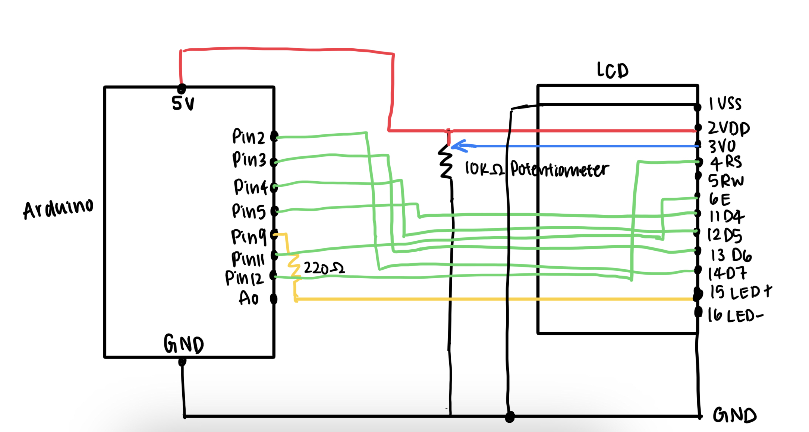
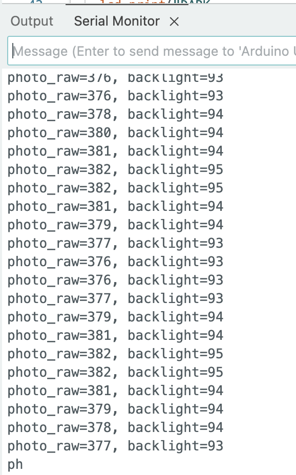
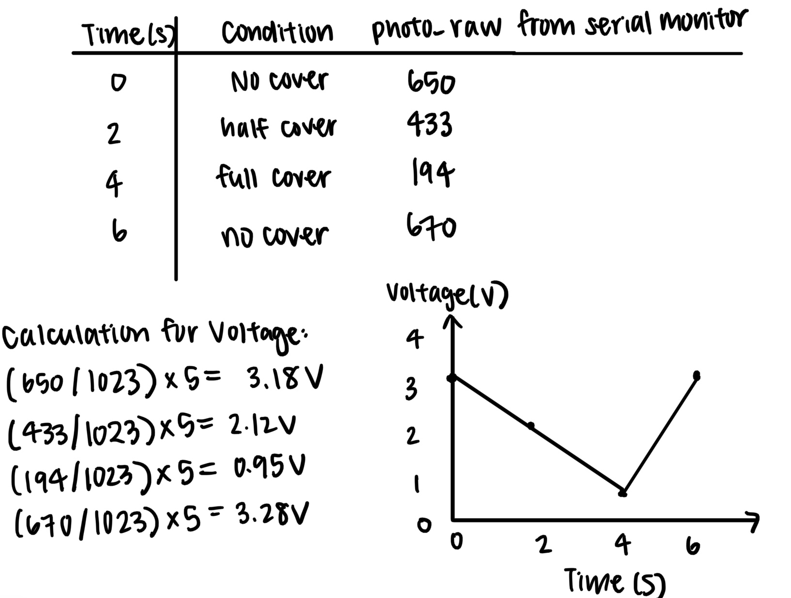

This assignment uses an LDR that changes its resistance when light levels change.
The Arduino reads that signal and uses it to control the brightness of the LCD backlight.
When it’s bright, the screen shows “BRIGHT,” and when it’s dark, it shows “DARK.” The Arduino
also sends the light reading to the Serial Monitor.
Schematic

Schematic for A3: The LCD's power connects to 5V and ground, with data pins D4–D7 going to Arduino pins 2–5,
and control pins to pins 11–12. A 220Ω resistor protects the backlight on pin 9. The light sensor uses a
photoresistor and 10kΩ resistor to connect to A0.
Animated GIF
When the light levels change, the LCD changes its reading. If it's bright outside, the screen prints
"BRIGHT". And when it's dark outside, the screen prints "DARK".
Firmware
/*
The circuit:
* LCD RS pin to digital pin 12
* LCD E pin to digital pin 11
* LCD D4 pin to digital pin 5
* LCD D5 pin to digital pin 4
* LCD D6 pin to digital pin 3
* LCD D7 pin to digital pin 2
* LCD RW pin to GND
* LCD VSS to GND
* LCD VDD to +5V
* LCD VO to 10k potentiometer
* LCD LED+ (15)→ Arduino D9 through 220 resistor
* LCD LED- (16)→ GND
*/
// include the LCD library code
#include <LiquidCrystal.h>
// initialize the library by associating LCD pin to corresponding arduino pin
const int rs = 12, en = 11, d4 = 5, d5 = 4, d6 = 3, d7 = 2;
LiquidCrystal lcd(rs, en, d4, d5, d6, d7);
// LDR output to A0
const int sensorPin = A0;
// PWM pin to LCD pin 15 through 220 resistor
const int backlightPWM = 9;
// midpoint threshold for BRIGHT/DARK
const int threshold = 512;
void setup() {
// LCD's columns and rows
lcd.begin(16, 2);
// enable PWM output to backlight
pinMode(backlightPWM, OUTPUT);
// initialize serial communications
Serial.begin(9600);
}
void loop() {
// read 0 to 1023 from LDR divider
int raw = analogRead(sensorPin);
// map function to change from 0-1023 to 0-255
int brightness = map(raw, 0, 1023, 0, 255);
// set backlight level
analogWrite(backlightPWM, brightness);
// if more than threshold, go to the top line and print bright
if (raw >= threshold) {
lcd.setCursor(0, 0);
lcd.print("BRIGHT ");
// if not, go to top line and print dark
} else {
lcd.setCursor(0, 0);
lcd.print("DARK ");
}
// go to second line, label the value and show current reading
lcd.setCursor(0, 1);
lcd.print("A0:");
lcd.print(raw);
// clear old text
lcd.print(" ");
// print label
Serial.print("photo_raw=");
// print reading
Serial.print(raw);
// print label
Serial.print(", backlight=");
// print brightness level
Serial.println(brightness);
// pause for readability
delay(100);
}
Serial Monitor

The Serial Monitor prints two labeled values:
photo_raw is the light reading from A0 (0–1023), and backlight is the mapped brightness sent to the LCD backlight (0–255).
When light increases, photo_raw and backlight both go up. When it’s darker, both values decrease.
Voltage Divider Explanation and Calculation
To calculate the voltage at A0 (VA0): 5 V * (10 kΩ resistor) / (LDR + 10 kΩ resistor)
To calculate ADC reading: (VA0 / 5V) * 1023
When LDR is bright (≈ 1 kΩ): VA0 = 5 V * (10 kΩ resistor) / (1 kΩ + 10 kΩ resistor) ≈ 4.5 V
ADC reading = (4.5 V / 5V) * 1023 = 930
When LDR is dark (≈ 50 kΩ): 5 V * (10 kΩ resistor) / (50 kΩ + 10 kΩ resistor) ≈ 0.8 V
ADC reading = (0.8 V / 5V) * 1023 ≈ 164
What I expect to see on A0: from approximately 164 when it's dark to approximately 930 when it's bright.
I chose to use a 10 kΩ resistor because it allows the divider to stay on a midpoint, with V around 2.5 and ADC around 512.
This gives a good balance between bright and dark readings.
Calculation: 5 V * 10 kΩ / (10 kΩ + 10 kΩ) = 2.5 V
ADC reading = (2.5 V / 5V) * 1023 = 512
Additional Questions
The LDR can be on either side of the divider. For example, when LDR is on top to 5 V, 10 kΩ to GND:
Bright (1 kΩ): VA0 ≈ 4.5 V, ADC ≈ 930. Midpoint (10 kΩ): VA0 = 5 × 10/(10+10) = 2.50 V, ADC ≈ 512. Dark (50 kΩ): VA0 ≈ 0.8 V, ADC ≈ 164. Reading increases with light.
When LDR on bottom (to GND), 10 kΩ to 5 V:
Bright (1 kΩ): VA0 = 5 × 1/(10+1) = 0.455 V, ADC ≈ 93. Midpoint (10 kΩ): VA0 = 5 × 10/(10+10) = 2.50 V, ADC ≈ 512. Dark (50 kΩ): VA0 = 5 × 50/(10+50) = 4.17 V, ADC ≈ 853. Reading decreases with light.
In both cases, when the LDR is 10 kΩ, VA0 ≈ 2.5 V, ADC ≈ 512.
Time VS Voltage Graph:

Time on the x-axis and voltage on the y-axis. photo_raw read through serial monitor to calculate the voltage.
If the ADC was 16-bit and the PWM was 10-bit, I would change the map line to:
map(raw, 0, 65535, 0, 1023), as 2^16 - 1 = 65535.
This is because map() remaps a number from one range to another, so the new bit number just changes the input and output limits.